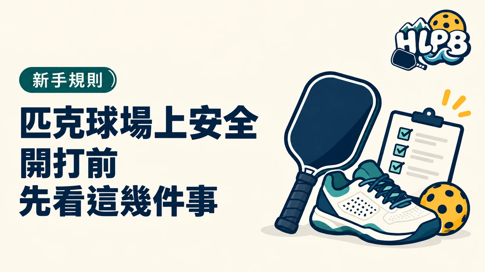

開打前先確認地面、周邊與共同移動空間，比等到追球時才發現障礙更有用。安全檢查不只是看場內畫線，也包含球袋、備用球與場邊走動位置。
進場後，先檢查這四個地方
| 位置 | 檢查方向 |
|---|---|
| 地面 | 積水、碎石、異物及明顯濕滑處 |
| 球網周邊 | 支架與其他突出物的位置 |
| 底線與側邊 | 退步、轉身及揮拍需要的空間 |
| 場外動線 | 球袋、備用球與走動的人 |
發現需要處理的問題，先讓同場球友知道，再決定清理、調整範圍或暫停使用。不能只因前一組已經打過，就省略自己的現況確認。
雙打的安全，也包含溝通
HLPB 建議先約好中間球與移動提醒方式，尤其兩人同時追球時，不要只盯落點而忽略搭檔。鄰場有球滾入時，先清楚提醒，等大家知道後再處理，不突然穿越對打動線。
不舒服時，不用勉強完成一局
暖身、適合的鞋具與補水是準備的一部分，但不能保證不受傷。出現疼痛、頭暈或明顯不適，先停止活動並尋求現場協助；本文不提供診斷、治療或帶傷繼續比賽的判準。
以上為一般場地與活動準備建議。能否使用某個場地，還需依管理單位安排，不能把安全檢查看成租借或進場許可。
內容更新：2026-10-20｜資料來源：USA Pickleball 官方資料；USA Pickleball 官方資料
返回文章列表